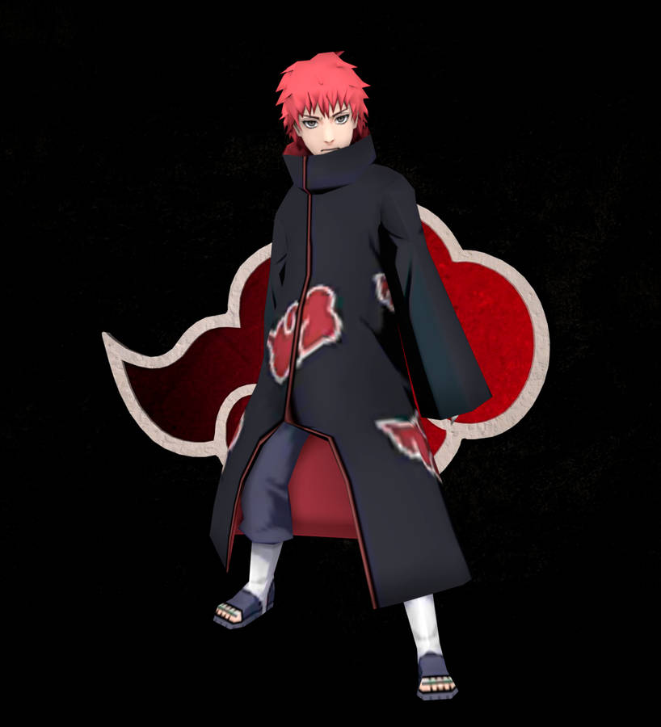

SASORI
When Sasori was young, his father and mother were killed by Sakumo Hatake in battle, leaving him in the care of his grandmother, Chiyo. When Chiyo attempted to cheer him up by teaching him puppetry, Sasori's innate aptitude for the art became apparent, and he even began to devise masterful ways of eliminating a puppet master's weaknesses in battle. His skills even allowed him to create two puppets in the image of his parents in an attempt to discard the terrible loneliness he felt. However, as the puppets were unable to give him the real parental love that he desired, Sasori lost interest in them, and they later fell into Chiyo's possession. Sasori created many other ingenious puppets, including Kuroari, Karasu, and Sanshōuo. Know more |
|